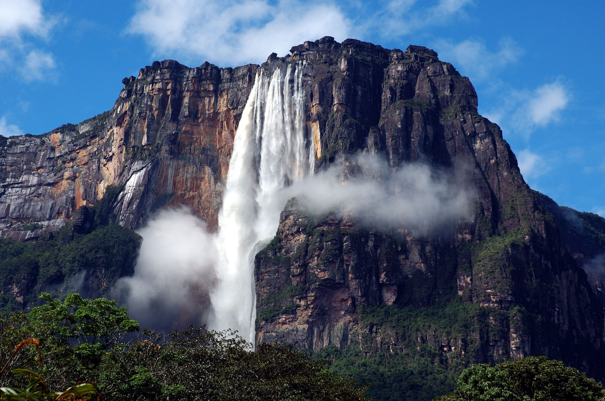

Salto Angel (Venezuela)
Una enorme columna de agua que brota furiosamente de la imponente pared de roca descarnada del tepuy Auyantepuy cae con un ensordecedor bramido y desaparece entre una densa bruma de agua pulverizada antes de alcanzar el río Churún. Así es Salto Ángel en algunas guías también figura como Salto del Ángel o Angel Falls en inglés, la cascada más alta del mundo con sus 979 metros de altitud, de los cuales tan solo 807 son caída continua, mientras que el resto son pequeños saltos de agua igualmente impresionantes.
Perfil
Steve Jobs
San Francisco, California, 24 de febrero de 1955-Palo Alto, California, más conocido como Steve Jobs, fue un empresario y magnate de los negocios del sector informático y de la industria del entretenimiento estadounidense. Fue cofundador y presidente ejecutivo de Apple Inc.y máximo accionista individual de The Walt Disney Company.
Punta Cana (Republica Dominicana
Punta Cana es una localidad situada al este de la República Dominicana, en la provincia de La Altagracia. En esta localidad se ubican varios complejos hoteleros, cuya superficie total es de unos 420 000 m² (equivalentes a 42 hectáreas o 0,42 km²). En Punta Cana se encuentra el Aeropuerto Internacional Punta Cana (PUJ), el principal aeropuerto del país, situado a unos 30 km hacia el interior, en la carretera que lleva desde Higüey hasta La Romana. Este aeropuerto recibe el 64% de todos los vuelos que llegan al país, por lo que recibe más pasajeros que el Aeropuerto Internacional de Las Américas, situado en Santo Domingo. Administrativamente, Punta Cana es un distrito municipal perteneciente al municipio de Higüey bajo el nombre de Distrito Municipal Turístico Verón Punta Cana.2 Este distrito tenía según el censo de 2010 una población de 43.982 habitantes, de los cuales 37.286 eran del área urbana y 6696 del área rural.
Perfil
Linus Torlvads
28 de diciembre de 1969, Helsinki, Finlandia es un ingeniero de software finlandés estadounidense,1 conocido por iniciar y mantener el desarrollo del kernel (en español, núcleo) Linux, basándose en el sistema operativo libre Minix creado por Andrew S. Tanenbaum y en algunas herramientas, varias utilidades y los compiladores desarrollados por el proyecto GNU. Actualmente es responsable de la coordinación del proyecto.